nu1ctf 2020 oflo writeup
本来去年就应该写的东西，拖到了现在…
nu1ctf 2020 oflo writeup
使用IDA加载后发现main函数无法解析，但可以找到其基地址0x400B54，遂直接阅读汇编代码。
程序显示按常规操作进行调用过程初始化，然后读取了一个段寄存器，偏移量0x28
这个固定偏移量的段寄存器有什么用？在Linux下，操作系统并不使用FS段寄存器。
经过搜索后发现：
assembly - How are the fs/gs registers used in Linux AMD64? - Stack Overflow
c - Why does this memory address %fs:0x28 have a random value? - Stack Overflow
linux - What sets fs:0x28 (stack canary)? - Unix & Linux Stack Exchange
fs:0x28被glibc用于存放金丝雀值
接着继续读汇编，发现指令rep stosq，这一条指令常见于memset，其以RCX为重复次数，RAX为源内容，RDX为目标串，写入数据，相当于memset(RDX, RAX, RCX)
然后看见存在一条跳转指令
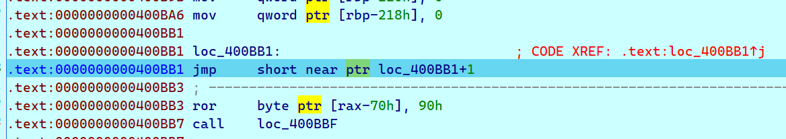
1 | jmp short near ptr loc_400BB1+1 |
怀疑是进行了混淆，在0x400BB1处按U取消分析，然后在0x400BB2处按C重新分析代码
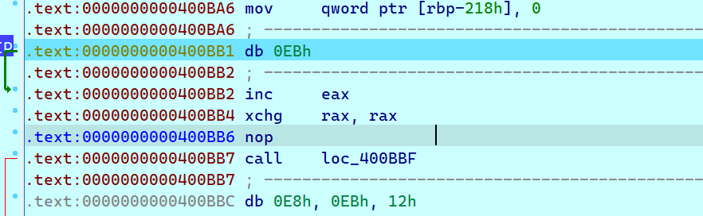
然后可以把0x400BB1处的指令用nop替代掉
下面的指令很有意思xchg rax, rax交换了RAX和RAX寄存器的内容，相当于什么都没有做，可以当成nop对待（另外，好像有一本书就叫做xchg rax, rax）
接着一个call到0x400BBF处执行，这个0x400BBF用很复杂的手段干了很简单一件事：跳转到0x400BBD执行，所以0x400BBC处的是花指令了
按照同样的方法处理以下，将没用的部分NOP注释掉，(其实可以直接将0x400BB7和0x400BBF到0x400BD0一起注释掉)
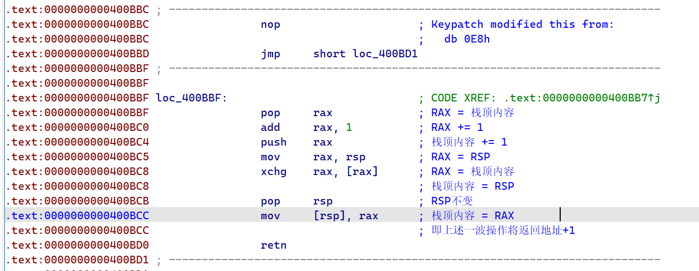
接着看0x400BD1：
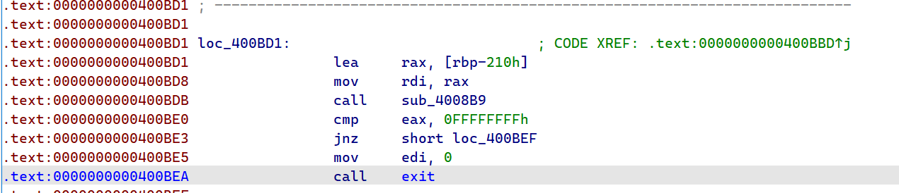
这里调用了函数sub_4008B9，如果返回为-1则退出
进入sub_4008B9研究，根据x64调用规则，RDI即[RBP-210h]为传入的第一个参数
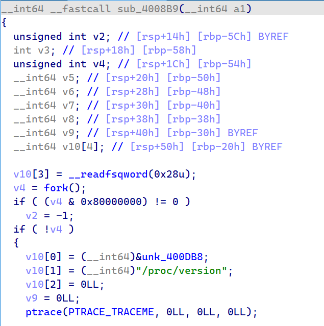
我们遇到了一个可以F5看代码的函数啦！
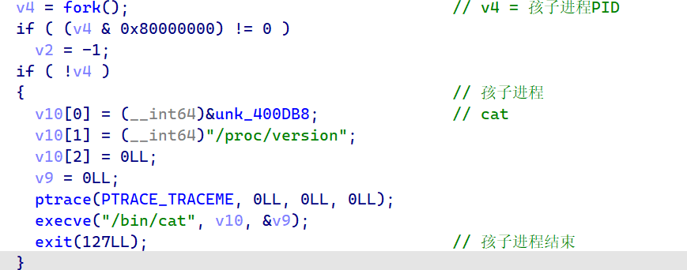
这个函数是一个fork and exec的模式，但是在孩子进程中执行了ptrace怀疑是反调试（实际上也是这样）
关于这个ptrace，查阅man文档后得知：
A process can initiate a trace by calling fork(2) and having the
resulting child do a PTRACE_TRACEME, followed (typically) by an
execve(2). Alternatively, one process may commence tracing
another process using PTRACE_ATTACH or PTRACE_SEIZE.While being traced, the tracee will stop each time a signal is
delivered, even if the signal is being ignored. (An exception is
SIGKILL, which has its usual effect.) The tracer will be
notified at its next call to waitpid(2) (or one of the related
“wait” system calls); that call will return a status value
containing information that indicates the cause of the stop in
the tracee. While the tracee is stopped, the tracer can use
various ptrace requests to inspect and modify the tracee. The
tracer then causes the tracee to continue, optionally ignoring
the delivered signal (or even delivering a different signal
instead).
TRACEME参数：
PTRACE_TRACEME
Indicate that this process is to be traced by its parent.
A process probably shouldn’t make this request if its
parent isn’t expecting to trace it. (pid, addr, and data
are ignored.)The PTRACE_TRACEME request is used only by the tracee; the
remaining requests are used only by the tracer. In the
following requests, pid specifies the thread ID of the
tracee to be acted on. For requests other than
PTRACE_ATTACH, PTRACE_SEIZE, PTRACE_INTERRUPT, and
PTRACE_KILL, the tracee must be stopped.
这个相当于给父进程trace做准备
子进程没什么好说的，准备好ptrace环境然后执行cat /proc/version
接着看父进程
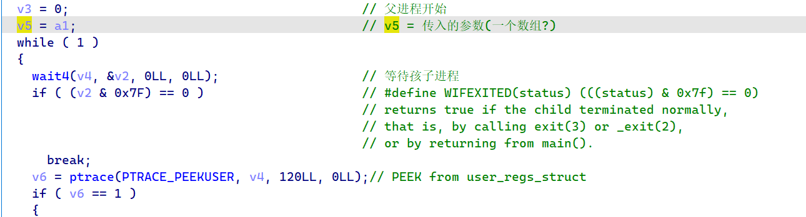
这里进入while循环后先指令了系统调用，查阅man手册获得以下信息：
The wait() system call suspends execution of the calling thread
until one of its children terminates. The call wait(&wstatus) is
equivalent to:
waitpid(-1, &wstatus, 0);The waitpid() system call suspends execution of the calling
thread until a child specified by pid argument has changed state.
By default, waitpid() waits only for terminated children, but
this behavior is modifiable via the options argument, as
described below.-1 meaning wait for any child process
接着查阅Linux源代码找到了0x7f的定义：
1 |
这个if有点意思，在wait4执行时已经确保了子进程会退出，并且在动态调试的时候，程序执行到wait4时应该会直接退出(挂载了调试器)，如何才能触发退出条件？
暂时先不管，继续看代码：
循环内使用ptrace获取了用户寄存器的值并存入了传入的数组中，结构体的定义在sys/user.h中
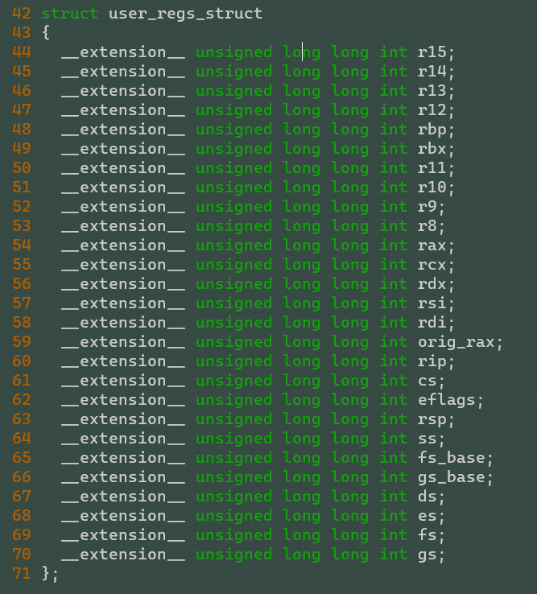
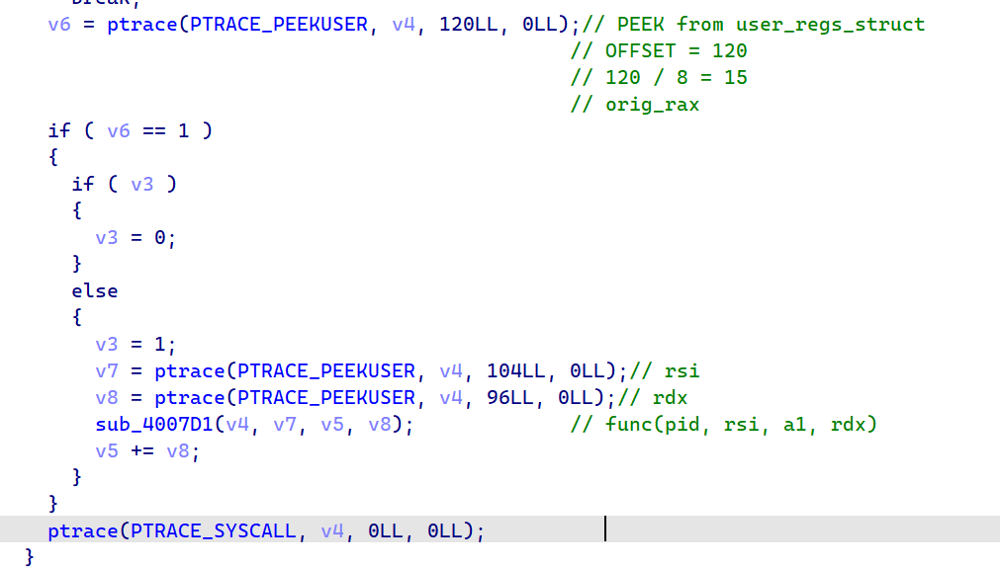
注意到里面调用了一个函数sub_4007D1，跟进分析一下：
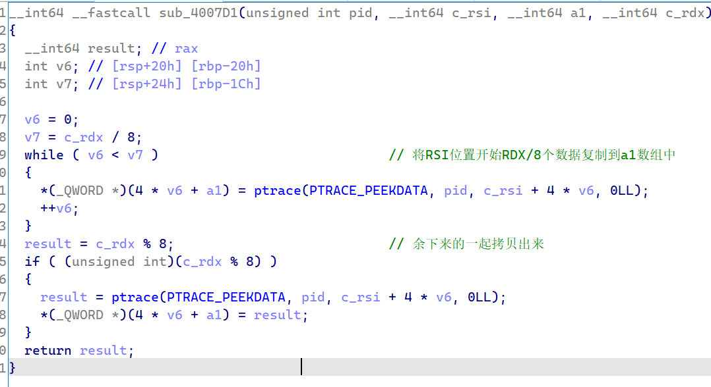
这个比较难分析，不清楚RSI，RDX对应的意思，所以考虑动态调试一下
回到主函数，继续分析：
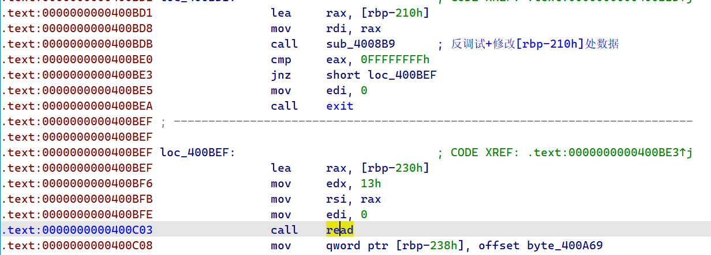
实际执行程序时运行到了read处要求输入，所以0x400BE3处应该能正常进行跳转，所以直接当程序运行到输入时附加调试器上去运行，看一下[rbp-210h]处被写入了什么数据
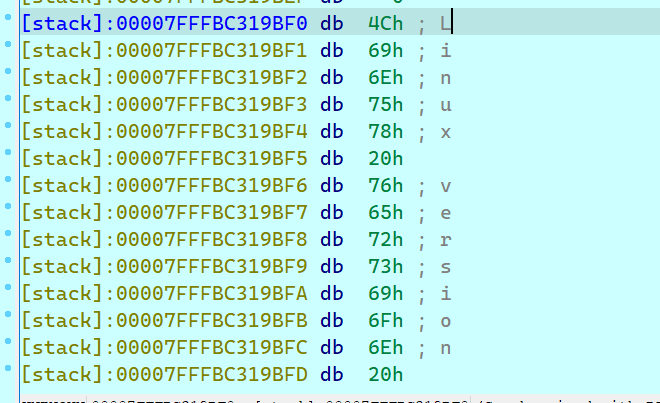
发现程序将cat /proc/version的数据拷贝到栈上了…
至于read的结果，被写入到RSI(指向的地方)上了。(输入了n1ctf{aaaaa})
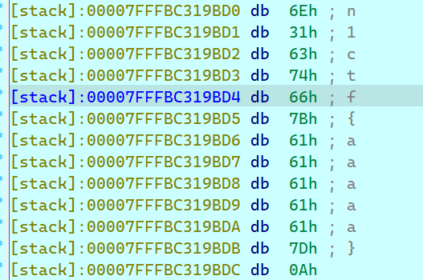
我们通过动态调试继续跟踪程序：
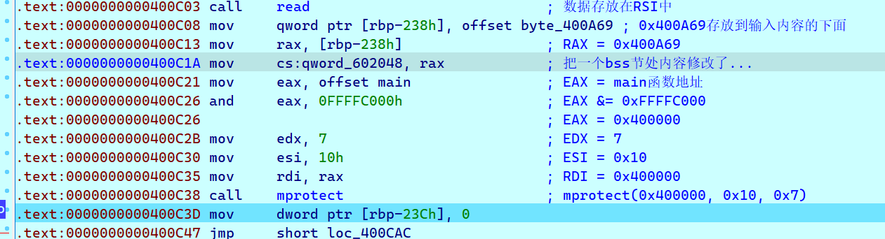
这里执行了mprotect系统调用，其在man中的解释如下：
mprotect, pkey_mprotect - set protection on a region of memory
int mprotect(void *addr, size_t len, int prot);
第一个是地址，第二个是长度，第三个是控制选项
这里地址和长度都直接看出来了，但是控制选项比较烦，查阅Linux代码得知：
1 |
这里prot为7即(111)b即PROT_READ | PROT_WRITE | PROT_EXEC
也就是给0x400000到0x400010区间内的内存赋予了读、写、执行的权限。
完成上述操作后，程序一个jmp跳转到了一个cmp处，怀疑这里是一个循环结构
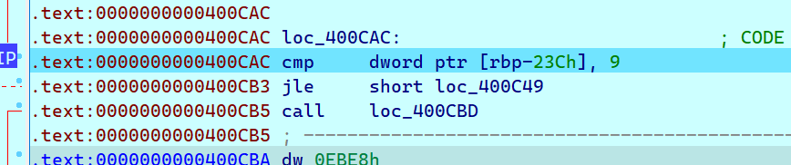
大致断定这里有一个for(int i=0; i<=9; i++)的循环
接着看循环体在做什么
首先有一个不认识的汇编指令CDQE，查询文档得知：
The
CDQEinstruction sign-extends a DWORD (32-bit value) in theEAXregister to a QWORD (64-bit value) in theRAXregister.
这条指令用于对EAX寄存器中数据进行符号扩展
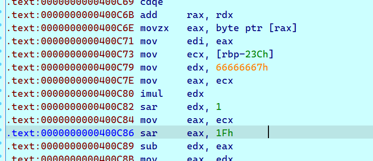
然后这里进行了一系列奇奇怪怪的运算，不知道在做什么(计算机系统基础还不够扎实)，经过暴力枚举测试，怀疑是在进行模5运算
测试代码：
1 |
|
对应的输出：
1 | EAX:0 ECX:0 EDX:0 |
实际上直接反汇编x%5也是这个结果(不知道IDA的F5能不能正常识别…)
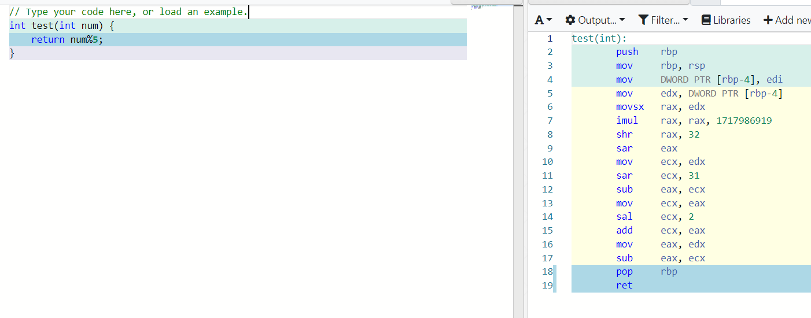
那么看到这里，这个for循环的内容大致研究清楚了：
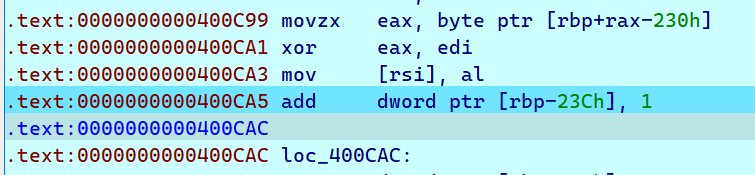
就是把0x400A69处前10个byte和输入的flag进行异或然后存储进去，伪代码大致如下：
1 | char* base = 0x400A69; |
完成处理后，又是熟悉的花指令：
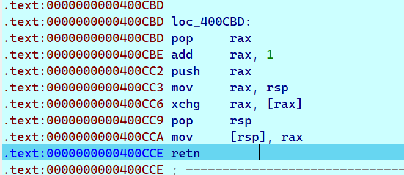
同样的方法处理一下，发现跳转到0x400CCF处
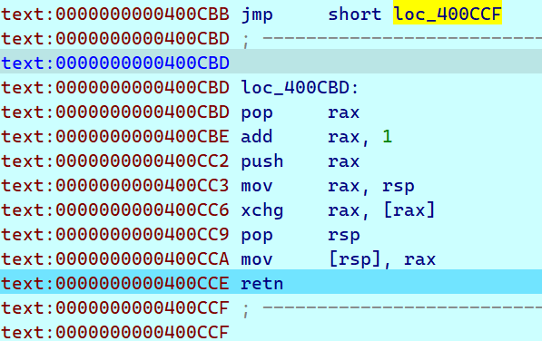
继续分析，发现0x400D04处又有一处花指令
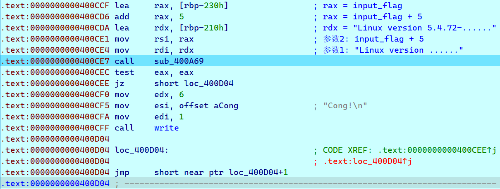
处理一下：
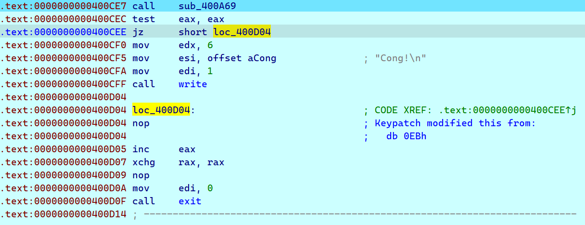
发现，如果sub_400A69函数处理后返回true那么输出Cong表示成功，反之直接退出，那么继续分析sub_400A69函数：
这个函数就是一个简单的异或判断：
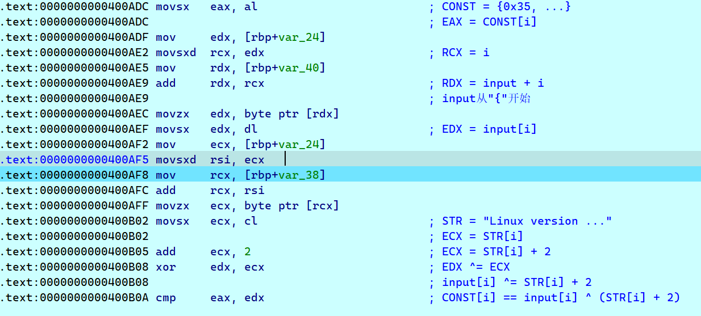
循环时从0到13，而/proc/version前14个刚好是常量：Linux version
解密代码：
1 |
|
输出：{Fam3_is_NULL}
拼接上开头的n1ctf最后flag就是n1ctf{Fam3_is_NULL}
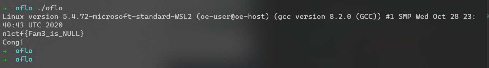
最后，关于整个程序，仍有一些疑问：为什么要修改0x400000到0x400010 处的属性？整个程序运行时（好像）并未访问这个地址……